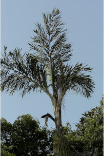

Images :



| Habit : | Palms up to 15 m tall. |
| Leaves : | Leaves compound , bipinnate , to 5 m long; pinnae 5-7 pairs, to 1.5 m long, leaflets lamina 25 x 10 cm, cuneiform , apex premorse . |
| Inflorescence / Flower : | Inflorescence spadices , shortly peduncled , much branched; spathes 3-5; spikelets closely arranged on the rachillae ; flowers unisexual . |
| Fruit and Seed : | Berry , stalked , ovoid or globose ; 1-2 seeded , ruminate . |